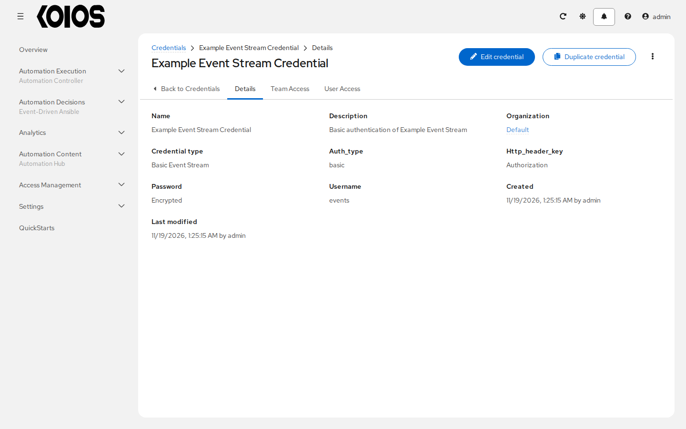
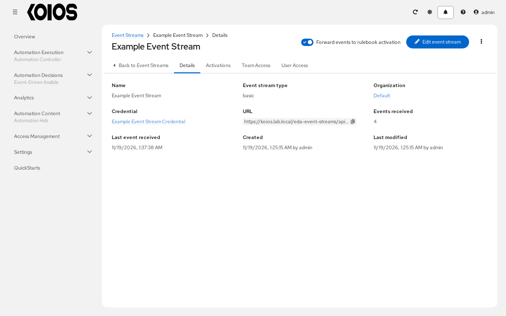
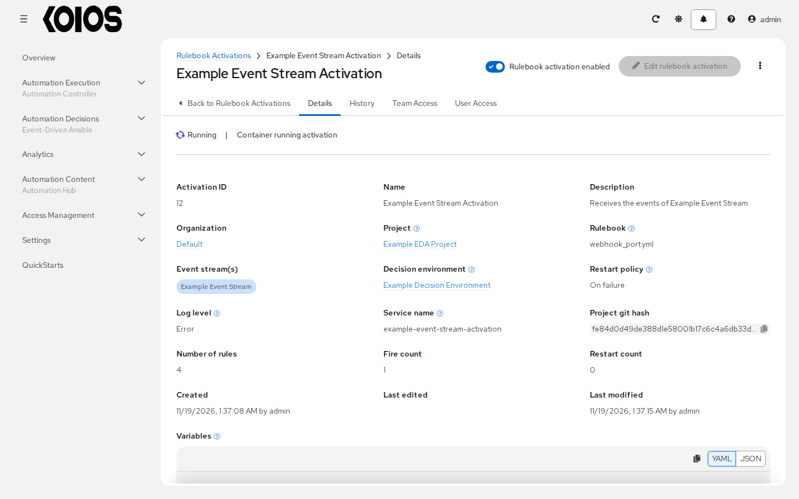
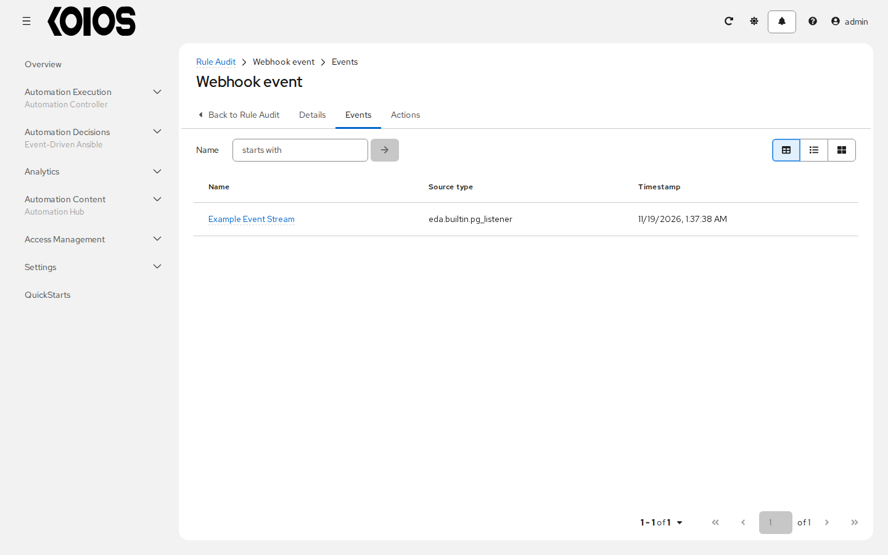
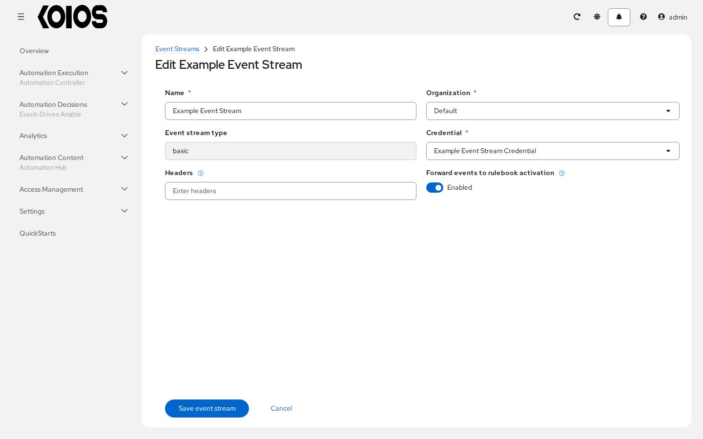

Receive events with event streams
An event stream gives an external sender an authenticated HTTP endpoint on the platform gateway. Map it to a rulebook source so that the activation receives the stream’s events instead of exposing its own listener port. The mapping applies to the activation; it does not rewrite the project’s rulebook in Git.
This tutorial uses Basic Event Stream authentication and the sample webhook_port.yml
rulebook. On the Koios test platform on 2026-11-18, a correct POST returned 200, an incorrect
password returned 403 with {"detail":"Credential mismatch"}, and Webhook event appeared
as successful in Rule Audit. The other authentication types below have not been validated in this
tutorial.
Before you start
Complete the decision environment and project steps in Your first rulebook activation. Reuse Example Decision Environment, Example EDA Project and Default.
Have permission to create an Event-Driven Ansible credential, event stream and activation.
Ensure the sender can reach and trust the public HTTPS address of the platform.
Choose a separate event-sender username and password. These are the stream credential’s values, not a platform administrator’s login. This example uses username
events.
Event stream credential types
The backend defines these managed types under Automation Decisions > Infrastructure > Credentials. Their presence in the type selector is not evidence that every authentication flow has been validated on Koios Automation Platform.
Credential type |
Authentication |
Validation scope here |
|---|---|---|
Basic Event Stream |
Username and password in the HTTP Authorization header. |
Validated for this tutorial. |
Token Event Stream |
Shared token in the configured HTTP header. |
Not validated in this tutorial. |
HMAC Event Stream |
Shared secret and a signature over the request body. |
Not validated in this tutorial. |
ECDSA Event Stream |
Public key and a signature over the request body. |
Not validated in this tutorial. |
OAuth2 Event Stream |
Access token checked through token introspection. |
Not validated in this tutorial. |
OAuth2 JWT Event Stream |
JWT checked with public keys from the configured JWKS URL. |
Not validated in this tutorial. |
GitLab Event Stream |
Token authentication using the GitLab token header. |
Not validated in this tutorial. |
GitHub Event Stream |
Provider-specific HMAC authentication. |
Not validated in this tutorial. |
ServiceNow Event Stream |
Provider-specific token authentication. |
Not validated in this tutorial. |
Dynatrace Event Stream |
Provider-specific Basic authentication. |
Not validated in this tutorial. |
mTLS Event Stream |
Client-certificate authentication requiring a suitable trusted ingress path. |
Current platform ingress limitation; see Mutual TLS limit. |
1. Create the Basic credential
Open Automation Decisions > Infrastructure > Credentials and click Create credential.
Field |
Value |
|---|---|
Name |
|
Organization |
Default |
Credential type |
Basic Event Stream |
Username |
|
Password |
A password chosen for this sender. |
Click Create credential. The type uses Basic authentication with the Authorization header;
its authentication-type and header defaults are hidden fields, not extra values to enter in the UI.

2. Create the event stream
Open Automation Decisions > Event Streams and click Create event stream.
Field |
Value |
|---|---|
Name |
|
Organization |
Default |
Event stream type |
Basic Event Stream |
Credential |
Example Event Stream Credential |
Headers |
Leave empty for this example. The authentication header is still checked. |
Forward events to rulebook activation |
Enabled |
Click Create event stream. In Details, copy URL. For this platform it has the form:
https://<platform>/eda-event-streams/api/eda/v1/external_event_stream/<uuid>/post/
Use the generated UUID and complete URL, including the trailing /post/. Do not send the request
to /api/eda/v1/event-streams/: that API manages the stream resource and is not its ingestion URL.
There is no need to expose port 5000 on an activation pod or to create a separate Ingress for it.

3. Map the rulebook source
Open Automation Decisions > Rulebook Activations and click Create rulebook activation.
Set Name to
Example Event Stream Activationand Organization to Default.Select Example EDA Project in Project, then webhook_port.yml in Rulebook. Its repository path is
extensions/eda/rulebooks/webhook_port.yml.Open the Event streams selector. In the mapping dialog, choose the Rulebook source whose Preview of source from rulebook contains
ansible.eda.webhook, and select Example Event Stream in Event stream. Click Save to keep the mapping.Select Example Decision Environment, set Restart policy to On failure, and leave Rulebook activation enabled? on. Leave Skip audit events unchecked.
Leave Credential empty: the example only logs a message and does not launch a controller job. The sender’s Basic credential is selected on the event stream, not in this activation field.
Click Create rulebook activation and wait for Running before sending the event.
The relevant sample rules are:
---
- name: Run a webhook listener service
hosts: all
sources:
- ansible.eda.webhook:
port: 5000
rules:
- name: Webhook event
condition: event.payload.ping == "pong"
action:
debug:
msg: "Webhook triggered!"
- name: Shutdown
condition: event.payload.shutdown is defined
action:
shutdown:
Without the mapping, this source opens its own webhook listener. With the mapping, the activation
uses the event stream instead. For this example, send a body with ping: pong; a field named
shutdown would match the separate shutdown rule.

4. Send an event and verify the rule
From a client that can reach the platform, run the following command with the URL copied from
Details. curl -u events prompts for the stream password, so the example does not put it in the
command line:
curl --include -u events \
-H 'Content-Type: application/json' \
--data '{"ping":"pong","message":"Hello from the documentation"}' \
'https://<platform>/eda-event-streams/api/eda/v1/external_event_stream/<uuid>/post/'
For a private CA, add --cacert /path/to/platform-ca.crt with the CA certificate trusted by this
client. Keep HTTPS verification enabled.
An accepted request returns HTTP 200. Then:
Open the stream’s Details and inspect Events received and Last event received.
Open Automation Decisions > Rule Audit, find Webhook event for Example Event Stream Activation, and confirm the successful action. Inspect Events to see
payload.ping: pongand Actions for the debug action.Open the activation’s History instance to inspect its output if needed.
A request counter or HTTP 200 is not by itself proof that a rule matched. This particular rule
only prints a debug message; it does not create an automation controller job.

Test mode
For diagnosing the sender connection without forwarding events to activations:
Open the stream and click Edit event stream.
Turn Forward events to rulebook activation off and click Save event stream. This sets the API field
test_modetotrue.Send a test request to the same URL using the stream credential.
In Details, inspect Body, Headers, Test content type and Test error message. A successfully authenticated, parsed test request stores its body and content type; a failed request can replace those fields with error information. Headers only contains the additional headers selected on the stream, with authentication data redacted.
The backend saves test data instead of notifying activations. This is not an event history or a replay queue. Changing test mode clears the previous test fields; turning forwarding on again does not replay the requests sent while it was off. Streams in test mode are not offered for new source mappings in the activation form.
The test-mode behavior above is documented from the backend and UI sources; it has not been validated in the Koios runtime walkthrough. Restore forwarding before testing the activation.

Mutual TLS limit
The mTLS Event Stream type exists in the backend. The current Koios Automation Platform Route/Ingress-to-gateway path does not provide the client-certificate ingress integration needed for this type; this remains pending. It is not validated and is not an available mTLS end-to-end procedure for this deployment.
Creating an mTLS credential or supplying a client-certificate header from a sender does not enable trusted client-certificate authentication. There is no mTLS setup recipe in this guide. Use an authentication mode appropriate to your sender and validated for your deployment; the walkthrough above uses Basic Event Stream over HTTPS.
Stop the tutorial activation
When you have finished, turn off the enabled switch for Example Event Stream Activation to stop it listening. Disabling the activation preserves its configuration. See Disabling and deleting before removing resources.